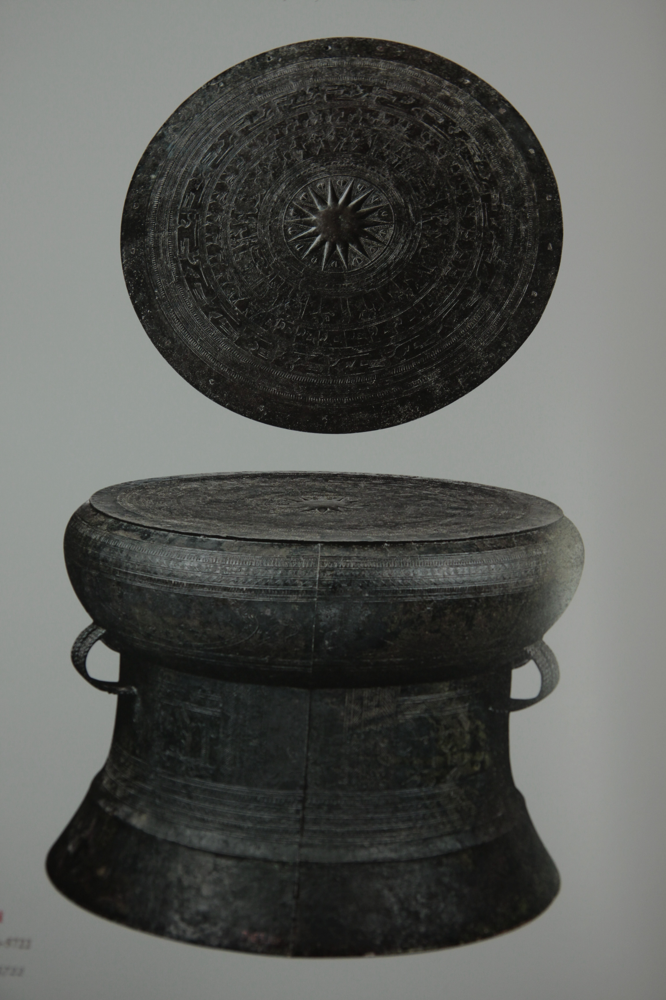
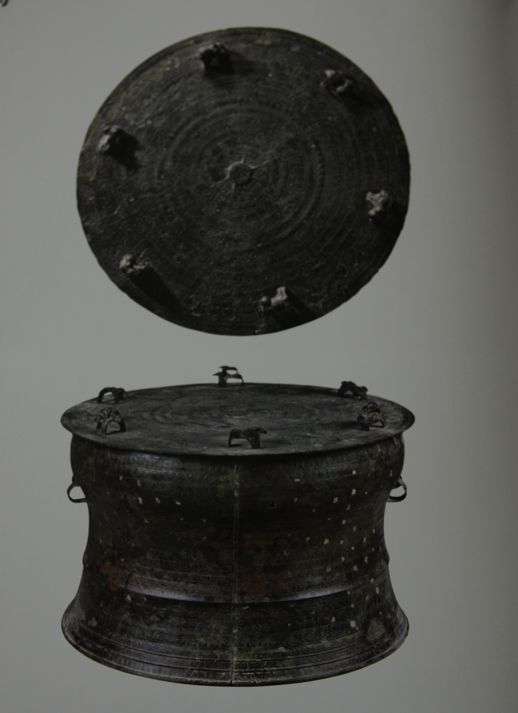
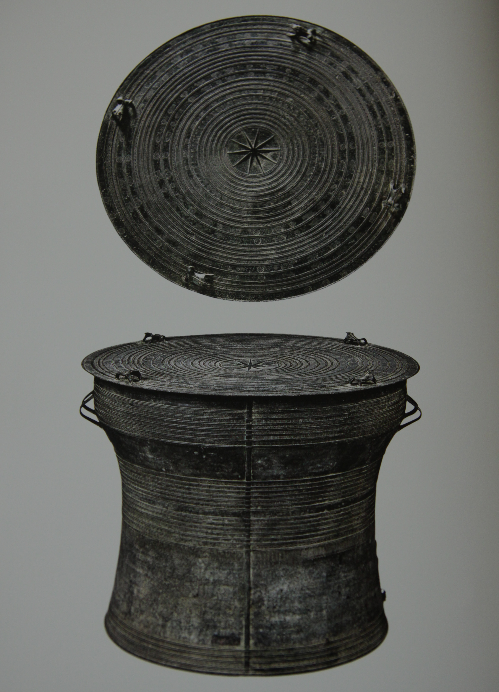
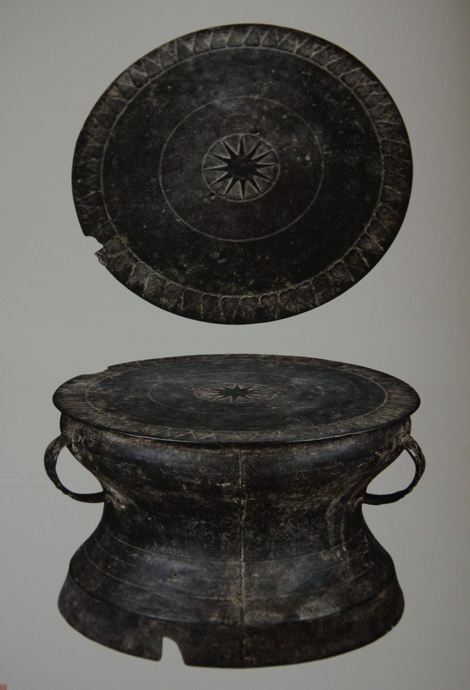

Heger I · Trống Đông Sơn
Nhóm cổ và tiêu biểu nhất
Thường có dáng cân đối, mặt rộng, tang phình và thân chân phân đoạn khá rõ. Hoa văn phủ dày với ngôi sao, hình chim, người múa, thuyền, nhà sàn và các dải hình học.
Bảo tàng nhỏ · Tài liệu học tập
Một trang tra cứu nhanh về trống đồng: từ phân loại Heger, cấu tạo, hoa văn đến những hiện vật tiêu biểu gắn với văn hóa Đông Sơn.

Tổng quan
Trống đồng không chỉ là nhạc khí nghi lễ. Trong nhiều trường hợp, nó còn gắn với biểu tượng quyền lực. Trên mặt và thân trống, người xưa gửi lại dấu vết về lễ hội, cư trú, thuyền bè, chim nước, chiến binh, kỹ thuật đúc đồng và cách cộng đồng hình dung về vũ trụ.
Trong hệ thống học tập này, trống đồng được nhìn theo ba lớp: hình dáng, hoa văn và bối cảnh sử dụng. Cách đọc ấy giúp người học không chỉ nhớ tên hiện vật, mà còn hiểu vì sao nó quan trọng.
Phân loại
Hệ phân loại của Franz Heger chia trống đồng thành bốn nhóm chính. Khi nghiên cứu ở Việt Nam, nhiều tài liệu cũng nhắc thêm các dạng trung gian hoặc những nhóm có đặc điểm chuyển tiếp.

Heger I · Trống Đông Sơn
Thường có dáng cân đối, mặt rộng, tang phình và thân chân phân đoạn khá rõ. Hoa văn phủ dày với ngôi sao, hình chim, người múa, thuyền, nhà sàn và các dải hình học.

Heger II · Thường gọi là trống Mường
Hình dáng đơn giản hơn, nhiều hoa văn hình học lặp lại. Một số trống có tượng cóc trên mặt. Nhiều tài liệu gọi đây là trống Mường vì nhóm này được người Mường sử dụng khá phổ biến.

Heger III · Trống Shan
Phần trên thường lớn hơn, thân thon dài xuống chân. Nhóm này phân bố rộng ở Đông Nam Á lục địa và xuất hiện ở Việt Nam với số lượng ít hơn loại I và II.

Heger IV
Thân thường chia thành hai phần, mặt vừa với thành tang, hoa văn giản lược hơn và thường không có cảnh sinh hoạt dày đặc như trống Đông Sơn loại I.
Dạng trung gian và loại đặc biệt
Một số sưu tập ghi nhận những dạng trung gian giữa các nhóm hoặc những chiếc trống mang đặc điểm chuyển tiếp. Phần này hữu ích khi so sánh, vì nó cho thấy quá trình giao lưu và biến đổi của trống đồng qua thời gian.
Cấu tạo
Khi quan sát, hãy tách trống thành các bộ phận. Cách này giúp người học nhận ra vì sao hình dáng cũng quan trọng như hoa văn.
Nơi tập trung ngôi sao trung tâm, các vòng hoa văn, chim, người và thuyền.
Phần phình dưới mặt trống, thường nối hình dáng và trang trí của mặt với thân.
Góp phần tạo âm vang và hình dáng tổng thể; ở trống Đông Sơn thường có bố cục chia đoạn rõ.
Thường đặt theo cặp, vừa phục vụ di chuyển vừa góp phần nhận diện loại hình.

Hoa văn
Hoa văn trống đồng nên được đọc như một chuỗi hình ảnh về thiên nhiên, nghi lễ và đời sống cộng đồng thay vì chỉ là trang trí.
Thường được hiểu như biểu tượng mặt trời, đặt ở vị trí trung tâm của mặt trống.
Gợi môi trường sông nước, mùa vụ và chuyển động của cộng đồng cư dân nông nghiệp; nhiều tài liệu quen gọi đây là chim Lạc.
Cho thấy giao thông đường nước, nghi lễ, chiến binh và mối liên hệ giữa các cộng đồng.
Phản ánh lễ hội, lao động và sinh hoạt tập thể của cư dân Đông Sơn.
Gợi hình thức cư trú và không gian cộng đồng trong bối cảnh vùng sông nước.
Vòng tròn đồng tâm, răng cưa, chấm dải và tiếp tuyến tạo nhịp thị giác cho mặt trống.
Dòng thời gian
Văn hóa Đông Sơn phát triển mạnh ở lưu vực sông Hồng, sông Mã và sông Cả.
Trống Ngọc Lũ được phát hiện tại Hà Nam, sau này trở thành một bảo vật quốc gia.
Franz Heger công bố hệ phân loại trống đồng cổ Đông Nam Á, nền tảng cho cách gọi Heger I-IV.
Di tích Đông Sơn được phát hiện tại khu vực Đông Sơn, bên bờ sông Mã ở Thanh Hóa.
Các cuộc khai quật và nghiên cứu tiếp theo giúp thuật ngữ văn hóa Đông Sơn dần được xác lập trong khảo cổ học Việt Nam.
Trống Hoàng Hạ được tìm thấy tại làng Hoàng Hạ, khu vực Phú Xuyên, nay thuộc Hà Nội.
Hiện vật tiêu biểu
Mỗi hiện vật là một điểm neo để so sánh loại hình, niên đại, hoa văn và nơi phát hiện.

Thường được xem là chiếc trống Đông Sơn đẹp, cân đối và giàu hoa văn bậc nhất từng được phát hiện.
Xem chi tiết →
Nổi bật với bố cục hoa văn gần với Ngọc Lũ, kích thước lớn và bảo tồn khá nguyên vẹn.
Xem chi tiết →
Một ví dụ tiêu biểu của nhóm Heger II, phù hợp để quan sát sự tiếp nối và biến đổi sau phong cách Đông Sơn loại I.
Xem chi tiết →
Gắn với không gian khảo cổ Cổ Loa, phù hợp để đặt hiện vật vào bối cảnh lịch sử vùng châu thổ sông Hồng.
Xem chi tiết →Nguồn tham khảo
Nội dung page được viết theo hướng dễ học, nên phần nguồn giúp người xem kiểm chứng và đào sâu khi cần làm bài thuyết trình hoặc nghiên cứu.